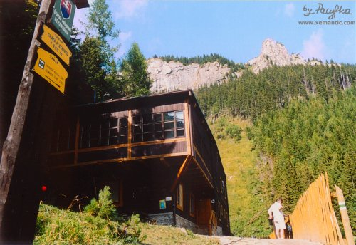

|
|
|
 |
|
|

|
|
| Historia |
|
|
|
W 1932 roku, w miejscu, gdzie dotąd stał jedynie szałas pasterski
(owce wypasano tu jeszcze przez 20 następnych lat), Tibor Gresch
postawił schronisko z myślą o turystach wędrujących grzbietem Tatr Bielskich
oraz o wczasowiczach i kuracjuszach z Tatrzańskiej Kotliny. Niestety gości nie
było zbyt wielu. Mimo problemów finansowych gospodarz prowadził schronisko
do czasu, kiedy po drugiej wojnie światowej był zmuszony opuścić kraj,
tak jak inni Niemcy, żyjący na Spiszu nieraz od pokoleń.
Upaństwowione schronisko po kilku latach zamknięto, zmieniając w stację
naukowo-badawczą parku narodowego. Jednak znajdujący się w potrzebie turyści
mimo zakazu mogli tu znaleźć awaryjny nocleg dzięki uprzejmości gospodyni,
którą była Eva Rużicková - Kasická. Po jakimś czasie miejsce to opustoszało
i zostało zapomniane. Dopiero gdy po upadku komunizmu przekazano je
miastu Spiska Bela (Biała Spiska) zostało odnowione i ponownie otwarte (1997r.)
Gospodarzem jest Janko Matava.
|
|
| |
|
Nazwa polska: Schronisko pod Szarotką
Nazwa słowacka: Chata Plesnivec
Wysokość: 1290 m n.p.m.
Położenie: Dolina Siedmiu Żródeł (Dolina Siedmich Prameňov)
Czynne: cały rok
Ilość miejsc noclegowych: 20
Telefon: +421/(0)905-256 722 (kom.)
Cena: (lato 2005) łóżko na 1 noc 220 Sk, na 2-3 noc 200 Sk,
4 i kolejne noce - 180 Sk, we własnym śpiworze 150 Sk
Dojście: Szlak zielony od Tatrzańskej Kotliny (1:30h),
szlak niebieski, a potem żółty lub zielony od Kieżmarskich Żlebów (2h).
Punkt wyjścia na: Przełęcz pod Kopą (Kopské Sedlo) 1750m
Trasy turystyczne:
szlak na Przełęcz pod Kopą - dla zaawansowanych turystów
|

Strona zaakceptowana i skatalogowana w

|
|